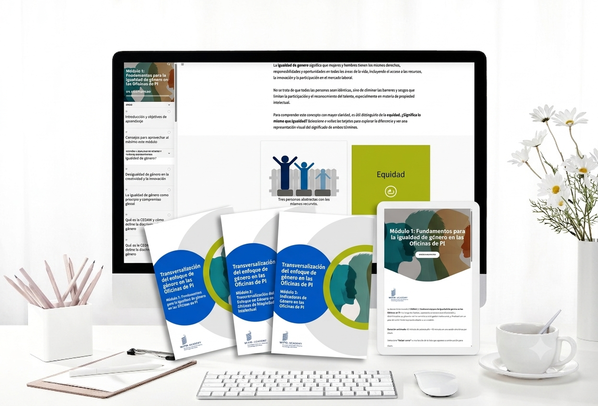
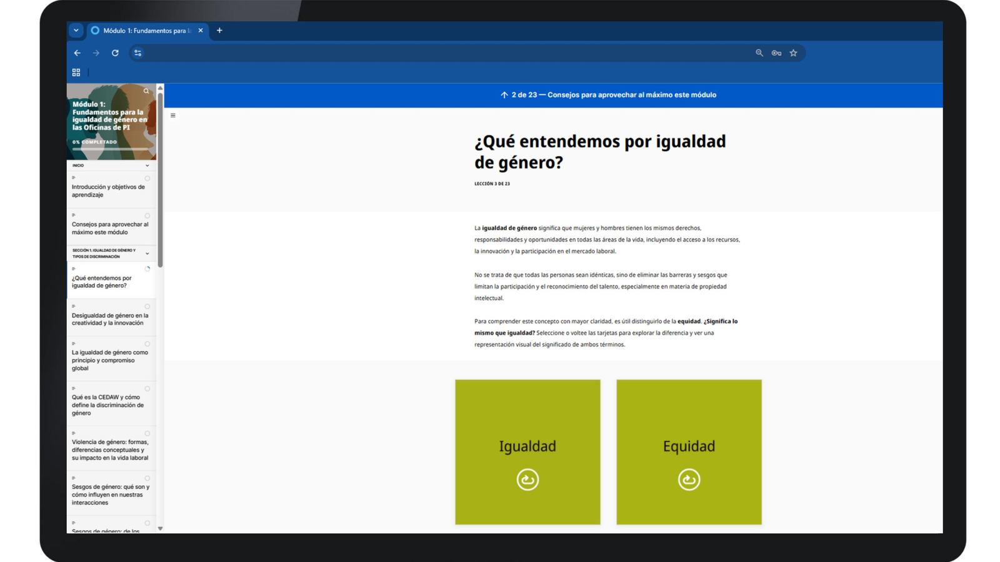
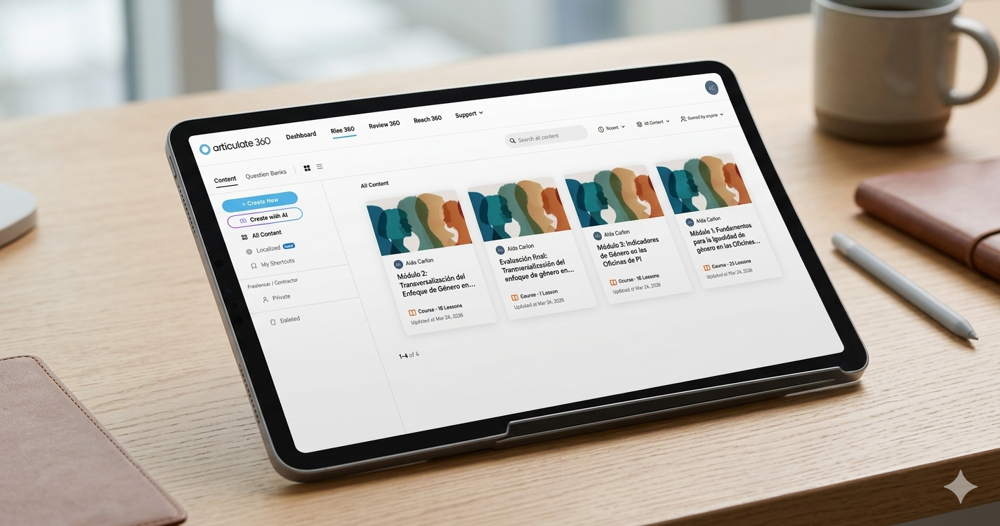
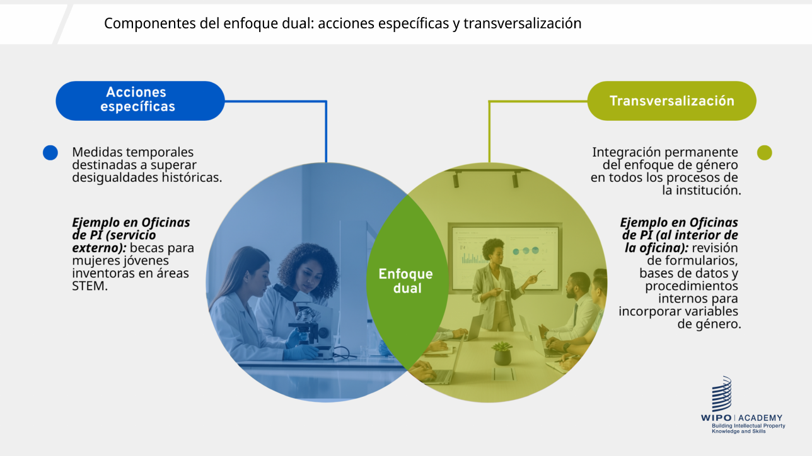
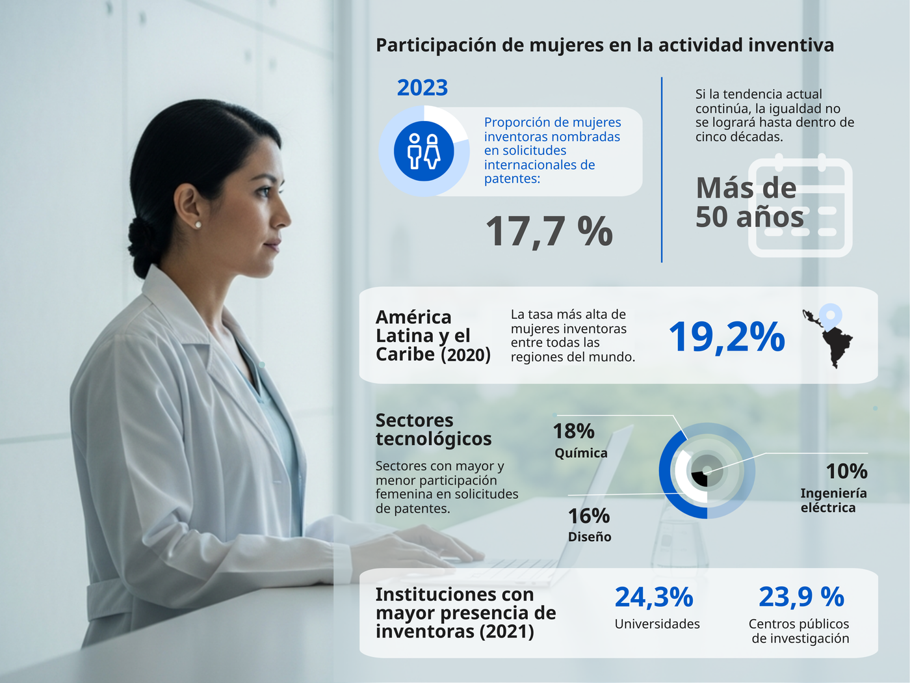
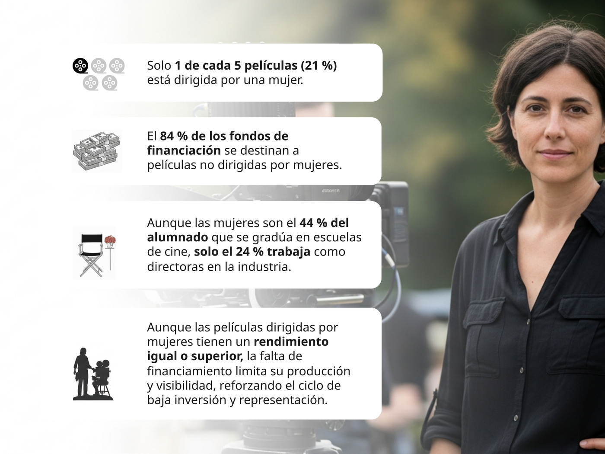
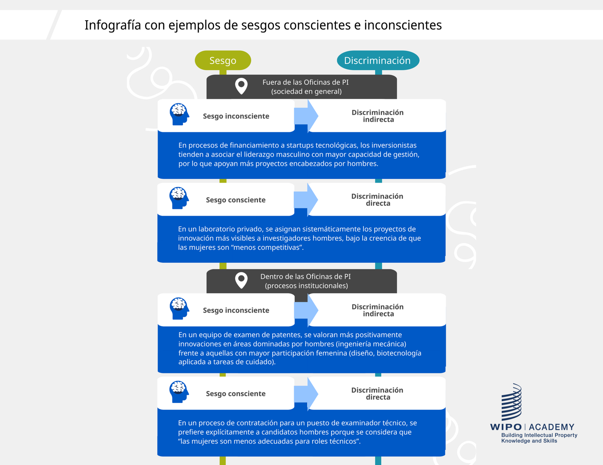
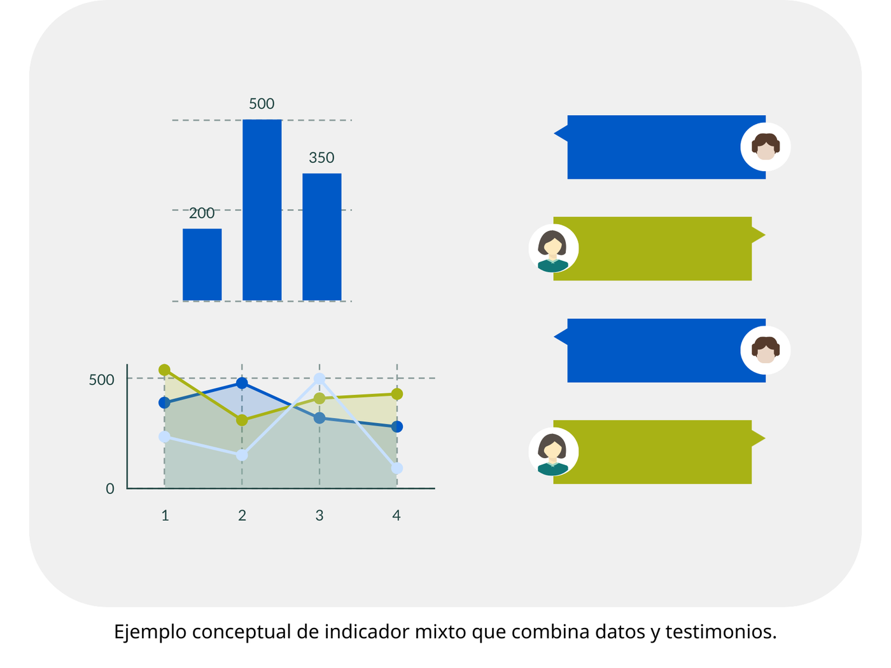
| Transfer goal | Course outcome | Level |
|---|---|---|
| Recognise and address gender bias in IP processes | Identify key gender biases, barriers and discriminatory practices | Analyse |
| Develop a Gender Action Plan for their office | Develop a GAP aligned with institutional objectives | Create |
| Advocate for data-driven decisions | Analyse internal and external dimensions of mainstreaming | Evaluate |
| Use gender-sensitive indicators | Apply indicators to monitor and evaluate equality measures | Apply |
| Outcome | Evidence | Type |
|---|---|---|
| Define gender mainstreaming | Auto-graded quiz, drag-and-drop definitions | Formative |
| Differentiate internal / external | Scenario classifying office actions | Formative |
| Apply tools in office areas | Mini-case on one department | Performance |
| Apply across functions | Zoom group exercise; GAP reflection | Transfer |
| All outcomes | Final test, items plus two case scenarios | Summative |
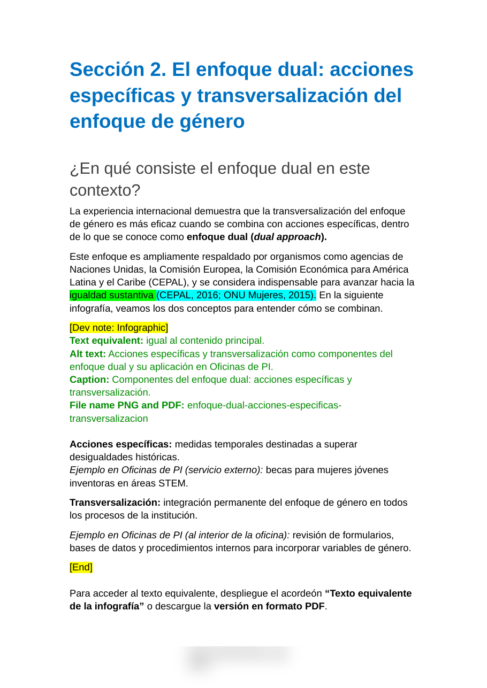
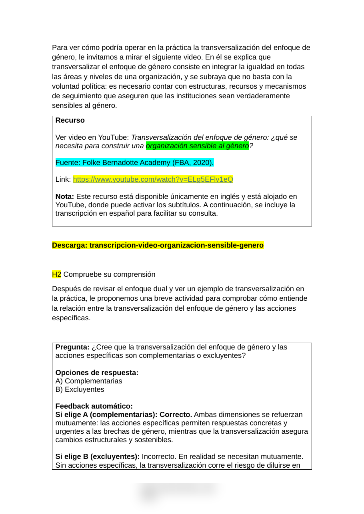
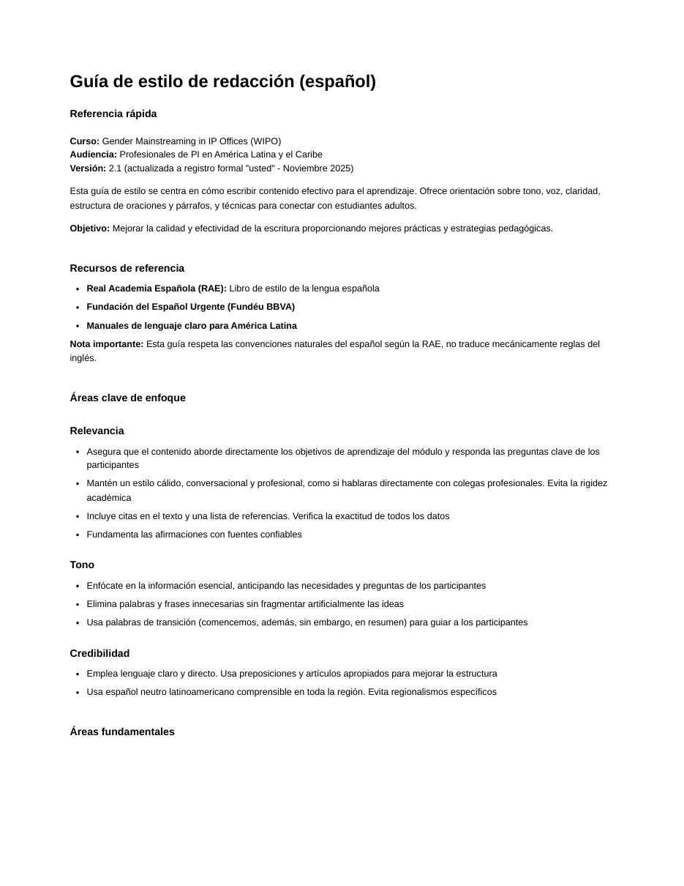
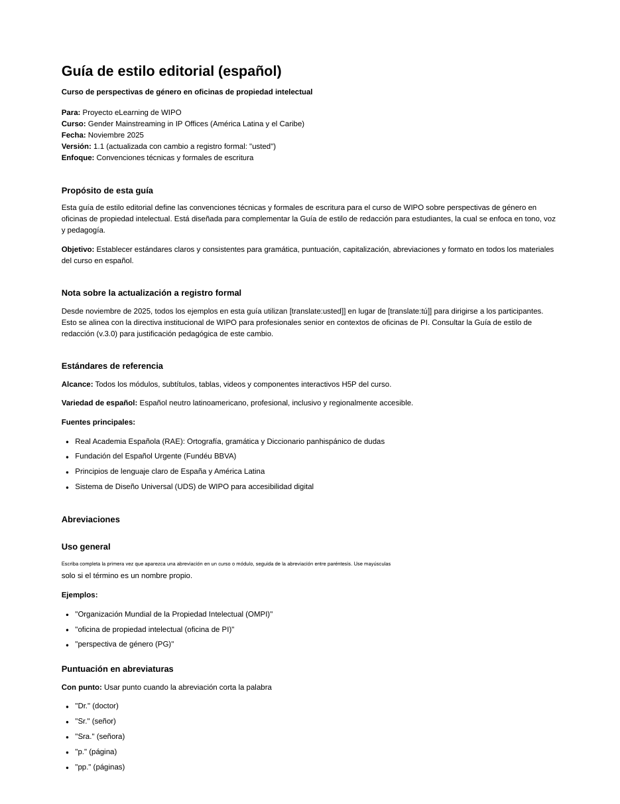
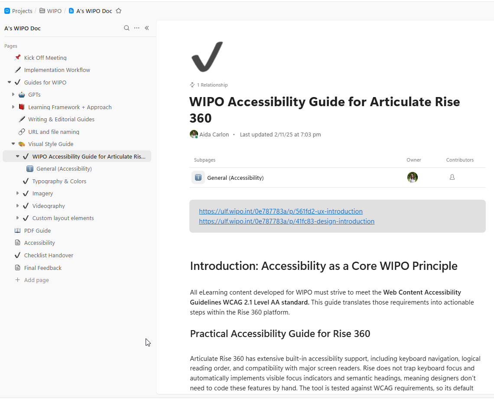